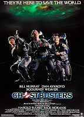
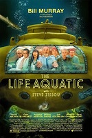
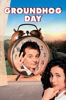

Biography
Bill Murray started his career in acting with comic roles, but later moved on to do dramatic roles. He is a golf enthusiast - he worked as a caddy in his formative years, and it was here that he developed a keen love for the game. He is also a baseball enthusiast. As a young man, he started on the wrong note, getting arrested for possession of marijuana.
He then joined the Saturday Night Live with fellow members Dan Aykroyd, Gilda Radner, and John Belushi.
Whatever you do, always give 100%.
Unless you're donating blood.
His first successful movie was ‘Meatball”. It was followed by the cult classic ‘Caddyshack’ and box-office hits such as ‘Stripes’, and ‘Tootsie’. His most popular movie was ‘Ghostbusters’. He did dramatic roles in ‘Wild Things’, ‘Cradle Will Rock’, ‘Hamlet’, and in the 2001 critically acclaimed movie ‘The Royal Tenenbaums’. He is involved in providing affordable housing to low-income seniors.
Notable Apperances
Ghostbusters
Ghostbusters is a 1984 American supernatural comedy film directed and produced by Ivan Reitman and written by Dan Aykroyd and Harold Ramis. It stars Bill Murray, Aykroyd and Ramis as Peter Venkman, Ray Stantz and Egon Spengler, three eccentric parapsychologists who start a ghost-catching business in New York City. The film also stars Sigourney Weaver and Rick Moranis, and features Annie Potts, William Atherton, and Ernie Hudson in supporting roles.
The Life Aquatic with Steve Zissou
The Life Aquatic with Steve Zissou is a 2004 American comedy-drama film written by Wes Anderson and Noah Baumbach and directed by Anderson.[1][2] It is Anderson's fourth feature-length film and was released in the United States on December 25, 2004.
The film stars Bill Murray as Steve Zissou, an eccentric oceanographer who sets out to exact revenge on the "jaguar shark" that ate his partner Esteban. Zissou is both a parody of and homage to French diving pioneer Jacques Cousteau, to whom the film is dedicated.
Groundhog Day
Groundhog Day is a 1993 American fantasy comedy film directed by Harold Ramis and written by Ramis and Danny Rubin. It stars Bill Murray, Andie MacDowell and Chris Elliott. Murray portrays Phil Connors, a cynical television weatherman covering the annual Groundhog Day event in Punxsutawney, Pennsylvania, who becomes trapped in a time loop, forcing him to relive February 2nd repeatedly.
Other Engegements
Partner in Murray Bros. Caddyshack
Golf themed restaurant based on the movie Caddieshack with locations in Chicago and Jacksonville
Part-Owner of St. Pauls Saints
Minor League Baseball team